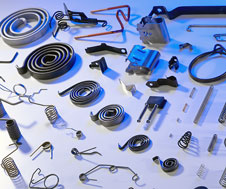

|  | ||||
Créée en 1979 pour le travail du tube, la société AMS s’est diversifiée en 1984 vers la fabrication des ressorts.
Ressortier fournisseur de l’automobile, l’électroménager, la cosmétique, la serrurerie, la robinetterie, le loisir, la société AMS s’est depuis, dotée d’un Service Qualité qui a conduit l’entreprise à l’obtention des normes ISO9001 et ISO/TS16949.
Grâce à la polyvalence de notre parc machine, nous sommes fabricant de ressorts de la petite à la grande série (> millions de ressorts). Notre équipement est axé sur des machines numériques avec contrôle automatique (Laser, Caméra) mais également, sur des machines mécaniques à coulisseaux multiples avec presses associées.
Une attention particulière a été portée au niveau du contrôle de la fabrication de nos ressorts, notamment pour les pièces de sécurité (Contrôles des caractéristiques à 100% avec orientation : Bons/Mauvais).
En partenariat avec nos Clients, nous assurons une logistique internationale (Europe, Asie, Amérique).
Nous mettons notre dynamisme à l’accomplissement de vos projets, pour votre satisfaction.
Notre savoir-faire de fabricant de ressorts repose sur une écoute permanente et une réactivité reconnue.
© 2008-2019 AMS (Ateliers Mécaniques de Saucourt) | Mentions légales | Conditions générales
creation site internet